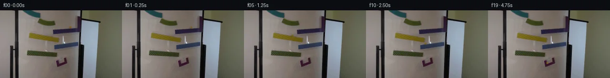

![首帧]()

Round 00
2026-11-05T10:53:35.889064+00:00像素候选变化代码 +181/−0inspection 更新
pixels ca301edc2ee3e4c8 · code 918e74a1d66da2af
查看本轮 generate.py 真实 diff
--- previous/generate.py
+++ current/generate.py
@@ -0,0 +1,181 @@
+"""Local numerical pixel synthesis for the fixed-camera marble run."""
+from pathlib import Path
+import json
+import numpy as np
+from PIL import Image, ImageDraw
+from artifact_io import save
+
+ROOT = Path(__file__).resolve().parent
+W, H = 256, 144
+G = 1000.0
+RADIUS = 2.12
+SCALE = 6
+SOURCE = np.array(Image.open(ROOT / 'first_frame.png').convert('RGB'))
+
+# Each segment is analytic in time. No external renderer or learned model.
+segments = []
+
+def rolling(x0, y0, vx, slope, target_x, name, start):
+ acceleration = (5 / 7) * G * slope / (1 + slope * slope)
+ roots = np.roots([0.5 * acceleration, vx, x0 - target_x])
+ duration = min(float(t.real) for t in roots if abs(t.imag) < 1e-8 and t.real > 1e-7)
+ seg = dict(name=name, start=start, end=start + duration,
+ x=x0, y=y0, vx=vx, vy=slope * vx,
+ ax=acceleration, ay=slope * acceleration, slope=slope)
+ segments.append(seg)
+ return target_x, y0 + slope * (target_x - x0), vx + acceleration * duration, start + duration
+
+
+def falling(x0, y0, vx, vy, next_slope, next_intercept, name, start):
+ # Solve the ballistic path's intersection with the receiving rolling center line.
+ roots = np.roots([0.5 * G, vy - next_slope * vx,
+ y0 - next_slope * x0 - next_intercept])
+ duration = min(float(t.real) for t in roots if abs(t.imag) < 1e-8 and t.real > 1e-7)
+ segments.append(dict(name=name, start=start, end=start + duration,
+ x=x0, y=y0, vx=vx, vy=vy, ax=0.0, ay=G))
+ x1 = x0 + vx * duration
+ y1 = y0 + vy * duration + 0.5 * G * duration**2
+ # Landing/guide friction dissipates tangential velocity; downhill gravity subsequently turns it.
+ incoming_vy = vy + G * duration
+ retained_vx = 0.24 * (vx + next_slope * incoming_vy) / (1 + next_slope**2)
+ return x1, y1, retained_vx, start + duration
+
+x, y, v, t = rolling(147.4, 35.6, -4.0, -0.082, 112.0, 'purple ramp', 0.0)
+x, y, v, t = falling(x, y, v, -0.082*v, 0.18, 45.9-0.18*62, 'drop to yellow', t)
+x, y, v, t = rolling(x, y, v, 0.18, 122.0, 'yellow ramp', t)
+x, y, v, t = falling(x, y, v, 0.18*v, -0.149, 71.7+0.149*115, 'drop to blue', t)
+x, y, v, t = rolling(x, y, v, -0.149, 115.0, 'blue ramp', t)
+x, y, v, t = falling(x, y, v, -0.149*v, 0.092, 83.0-0.092*59, 'drop to green', t)
+x, y, v, t = rolling(x, y, v, 0.092, 119.0, 'green ramp', t)
+x, y, v, t = falling(x, y, v, 0.092*v, -0.34, 112.5+0.34*122, 'drop into catcher', t)
+x, y, v, t = rolling(x, y, v*0.32, -0.34, 124.0, 'inside catcher', t)
+REST = (x, y)
+SETTLE_T = t
+WALL_V = -0.08 * v
+
+
+def state(time):
+ time = max(time, 0.0)
+ for seg in segments:
+ if time <= seg['end']:
+ u = max(0, time - seg['start'])
+ return (seg['x']+seg['vx']*u+0.5*seg['ax']*u*u,
+ seg['y']+seg['vy']*u+0.5*seg['ay']*u*u, seg['name'])
+ # Very small damped rebound against the existing left cup wall.
+ u = time - SETTLE_T
+ dx = WALL_V * u * np.exp(-22*u)
+ return REST[0]+dx, REST[1]-0.34*dx, 'settled in catcher'
+
+
+# Numerically reconstruct only the small board patch occupied by the original marble.
+# Fit nearby unaffected board pixels; preserve the actual ramp edge below it.
+yy, xx = np.mgrid[29:39, 137:156]
+patch = SOURCE[29:39,137:156].astype(float)
+valid = ~((xx >= 143) & (xx <= 150) & (yy >= 33))
+valid &= (patch.min(axis=2)>85) & (patch[:,:,0]-patch[:,:,2]<32)
+terms = np.stack([np.ones_like(xx), xx-147.4, yy-35.6, (xx-147.4)*(yy-35.6)], axis=-1)
+coef = np.linalg.lstsq(terms[valid], patch[valid], rcond=None)[0]
+prediction = terms @ coef
+# Keep a source-derived, very low amplitude board grain in the replacement.
+grain = (SOURCE[22:32,137:156].astype(float) - SOURCE[22:32,137:156].mean(axis=(0,1)))
+grain -= grain.mean(axis=2, keepdims=True)
+prediction += np.clip(grain, -1, 1)*0.3
+local_mask = np.clip((5.3-np.sqrt(((xx-147.0)/1.07)**2+((yy-35.6)/0.88)**2))/1.1,0,1)
+local_mask *= (yy<=37)
+# A subtle shadow skirt at row 38, keeping the purple ramp's board/track boundary intact.
+local_mask[yy==38] = np.where((xx[yy==38]>=143)&(xx[yy==38]<=148),0.55,0)
+BASE = SOURCE.copy()
… diff truncated; 94 more lines …